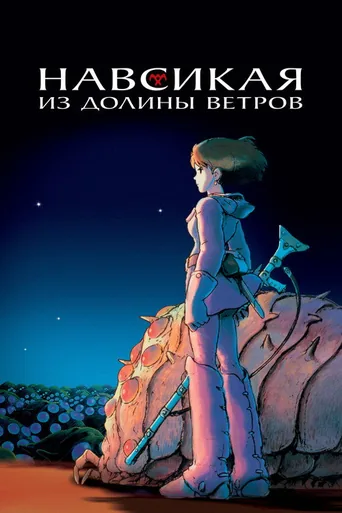

Навсикая из Долины Ветров 1984
Будущее. После ядерной войны Землю постигла ужасная экологическая катастрофа. Поверхность планеты почти целиком покрывают леса, испускающие в атмосферу ядовитые споры растений. Оставшиеся в живых люди живут в зонах, ещё не покрытых лесами, и периодически сталкиваются с чудовищными насекомообразными монстрами. Долина ветров — одно из царств, образовавшихся на руинах прежних государств. Им управляет отважная принцесса Навсикая. Но мирное существование Долины ветров нарушается, когда маленькая страна сталкивается с воинственными соседями, которые стремятся воссоздать опасное оружие, способное окончательно уничтожить планету.
Открыть в каталогеДанные и постеры принадлежат их правообладателям. Этот продукт использует TMDB API, но не одобрен и не сертифицирован TMDB.